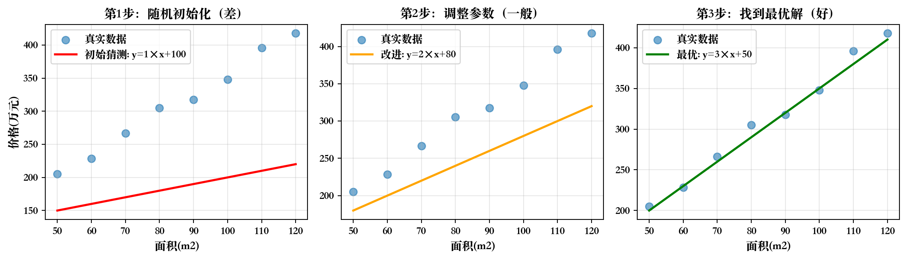
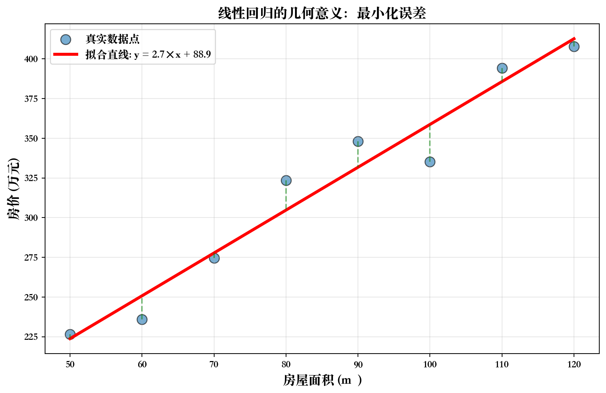
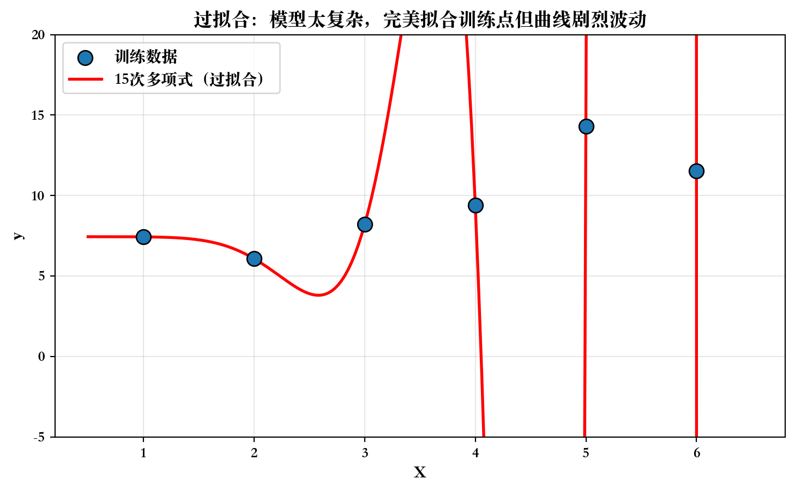
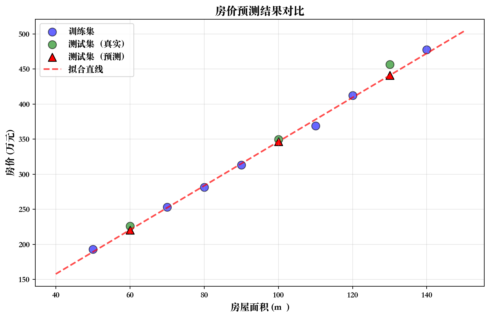

flowchart LR
A[大量历史数据<br/>收入+信用分+是否违约] --> B[机器学习算法]
B --> C[学到的模型/规律]
C --> D[新客户数据]
D --> E[预测：批准/拒绝]
3 第一讲：Python基础与机器学习入门
3.1 开场：我们为什么要学机器学习？
3.1.1 思考：这些场景有什么共同点？
场景1：银行信贷审批
- 客户申请贷款10万元
- 系统评估：收入5000/月、信用分700
- 自动决策：批准/拒绝
场景2：股票价格预测
- 分析历史交易数据
- 考虑宏观经济指标
- 预测未来一周走势
3.1.2 共同点：都需要处理复杂数据和决策
这些场景的相似之处：
- 依赖大量历史数据进行分析
- 需要考虑多个因素的复杂组合
- 目标是做出准确的预测或决策
传统方式（人工规则）：
IF 收入 > 5000 AND 信用分 > 700 THEN 批准贷款
ELSE 拒绝贷款问题：
- 规则是人定的，可能不准确或过于简单
- 无法处理复杂情况（如：收入4800但有房产、稳定工作等）
- 数据更新后规则可能失效，需要手动调整
3.1.3 这就是机器学习可以解决的问题！
机器学习的方式：让计算机从数据中自动学习规律
关键思想：
- 不需要人工总结规则
- 模型会自动找到”什么样的人容易违约”
- 数据越多，学习得越准确
3.2 第一部分：什么是机器学习？
3.2.1 定义：机器学习的本质
机器学习（Machine Learning）：
让计算机通过数据和经验自动改进性能的技术
举例：学习认猫（传统编程 vs 机器学习）
核心要素：
- 数据（猫的照片）
- 算法（学习方法）
- 模型（学到的规律）
flowchart TB
A[输入规则：有四条腿、有胡须、会喵喵叫] --> B[程序判断新图片]
B --> C{符合这些特征吗？}
C -->|是| D[判断为猫]
C -->|否| E[不是猫]
flowchart TB
A[看到很多猫的照片] --> B[总结特征]
B --> C[记住猫的样子]
C --> D[看到新图片]
D --> E{是猫吗?}
3.2.2 为什么需要机器学习？维度诅咒
3.2.2.1 维度诅咒（Curse of Dimensionality）
问题： 随着特征维度增加，数据变得异常稀疏
直观理解：
- 想象一个边长为1米的正方形：撒200粒米，基本覆盖整个区域
- 想象一个边长为1米的正方体：撒200粒米，只覆盖很小的角落
- 现实中的机器学习：特征往往有10个、100个甚至1000个以上
维度诅咒的后果：
- 数据点之间距离变得很大
- 传统的人工规则难以覆盖所有情况
- 需要机器学习从数据中自动学习模式
3.2.2.2 传统编程的困境
在高维特征空间中，人工编写规则变得不可能
金融场景例子：
- 贷款审批：收入、信用分、负债率、年龄、工作年限、地区、婚姻状况、教育水平…（10+个特征）
- 传统规则：
IF 收入>5000 AND 信用分>700 AND 年龄>25 AND 工作年限>2 AND ... - 问题：特征之间的复杂交互关系，人工根本无法穷举！
机器学习的优势：
- 自动学习：从数据中自动发现特征间的复杂关系
- 非线性模式：能处理特征间的非线性交互
- 可扩展性：特征维度增加时，算法仍然有效
3.2.3 机器学习 vs 传统编程
| 维度 | 传统编程 | 机器学习 |
|---|---|---|
| 输入 | 规则 + 数据 | 数据 + 答案 |
| 输出 | 答案 | 规则（模型） |
| 适用场景 | 规则明确 （如计算器） |
规则复杂/未知 （如人脸识别） |
| 优点 | 逻辑清晰、可解释 | 能处理复杂模式 |
| 缺点 | 难以处理复杂问题 | 需要大量数据 |
3.2.4 机器学习的分类
flowchart TB
A[机器学习] --> B[监督学习<br/>有标签]
A --> C[无监督学习<br/>无标签]
A --> D[强化学习<br/>奖励反馈]
B --> B1[分类<br/>预测类别]
B --> B2[回归<br/>预测数值]
C --> C1[聚类<br/>分组]
C --> C2[降维<br/>压缩]
style B fill:#e1f5e1
style B1 fill:#fff4e1
style B2 fill:#fff4e1
本课程重点：监督学习（因为金融领域90%的问题都是监督学习）
3.2.5 大语言模型（LLM）与机器学习分类
3.2.5.1 什么是大语言模型？
大语言模型（Large Language Models）：如 GPT、Claude、DeepSeek 等
核心特点：
- 参数规模巨大：数十亿到数万亿参数
- 预训练 + 微调：两阶段训练策略
- 生成式AI：不仅能分类，还能生成文本
3.2.5.2 LLM 在机器学习分类中的位置
flowchart TB
A[机器学习] --> B[监督学习<br/>有标签]
A --> C[无监督学习<br/>无标签]
A --> D[强化学习<br/>奖励反馈]
B --> B1[传统任务]
B --> B2[大语言模型<br/>LLM]
B1 --> B11[分类<br/>房价预测]
B1 --> B12[回归<br/>信用评分]
B2 --> B21[文本生成]
B2 --> B22[对话系统]
B2 --> B23[代码编写]
B2 --> B24[金融分析]
style B2 fill:#4caf50,color:#fff
style B21 fill:#81c784
style B22 fill:#81c784
style B23 fill:#81c784
style B24 fill:#81c784
LLM 仍然属于监督学习！
3.2.5.3 为什么 LLM 这么火？
- 数据规模的突破
传统机器学习：
- 数据集：几千到几万个样本
- 特征：几到几百个
大语言模型：
- 数据集：万亿级别的文本数据
- 特征：数万亿个参数自动学习
- 通用能力
传统模型： 一个模型解决一个任务
- 房价预测模型 → 只能预测房价
- 垃圾邮件分类 → 只能分类邮件
LLM： 一个模型解决多种任务
- 文本生成、翻译、编程、分析、创作…
- 涌现能力（Emergent Abilities）
小模型：能做简单任务
大模型：突然获得复杂能力（如数学推理、代码编写）
3.2.5.4 LLM 与传统机器学习的区别
| 传统机器学习 | 大语言模型 | |
|---|---|---|
| 数据类型 | 结构化数据 （表格、数值） |
非结构化数据 （文本、语言） |
| 特征工程 | 人工设计特征 | 自动学习特征 |
| 模型复杂度 | 相对简单 | 极其复杂 |
| 训练成本 | 几小时到几天 | 几周到几个月 |
| 应用场景 | 预测、分类 | 生成、理解、对话 |
| 可解释性 | 较高 | 较低 |
3.2.5.5 LLM 在金融领域的应用
- 智能客服与对话
- 自动回答客户问题
- 处理投诉和咨询
- 24小时在线服务
- 金融文本分析
- 自动阅读研报、新闻
- 生成投资摘要
- 情感分析（市场情绪）
- 风险评估
- 分析企业财报文本
- 理解合同条款
- 识别潜在风险
- 量化投资
- 生成交易策略代码
- 分析市场趋势
- 自动化报告生成
未来展望： LLM 将成为金融从业者的”智能助手”
3.2.6 机器学习的技术演进
timeline
1950s : 人工智能诞生
1980s : 神经网络复兴
1990s : 支持向量机流行
2000s : 随机森林、梯度提升
2010s : 深度学习突破
2020s : 大语言模型时代
未来 : 多模态AI、通用人工智能
我们正处于 AI 发展的激动人心的时刻！
3.3 第二部分：监督学习详解
3.3.1 什么是监督学习？
定义： 从带标签的数据中学习，预测新数据的标签
类比：有答案的练习题
- 老师给你100道数学题和答案
- 你通过练习学会解题方法
- 考试时遇到新题，能用学到的方法求解
3.3.2 监督学习的完整流程
flowchart LR
A[收集历史数据] --> B[数据预处理<br/>清洗/转换]
B --> C[特征工程<br/>选择有用信息]
C --> D[切分数据<br/>训练集+测试集]
D --> E[选择算法<br/>如线性回归]
E --> F[训练模型<br/>学习规律]
F --> G[评估模型<br/>测试集上验证]
G --> H{效果好?}
H -->|否| E
H -->|是| I[部署应用<br/>预测新数据]
style D fill:#ffe1e1
style F fill:#e1f5e1
style G fill:#e1e5ff
3.3.3 核心概念1：特征（Features）
特征 = 用来预测的信息 = 输入变量 = X
房价预测例子：
| 特征1 面积(m²) |
特征2 房龄(年) |
特征3 地铁距离(km) |
标签 价格(万元) |
|---|---|---|---|
| 50 | 5 | 0.5 | 200 |
| 80 | 10 | 2.0 | 250 |
| 120 | 2 | 0.3 | 500 |
特征选择的重要性：
- 好特征：与目标强相关（如面积与房价）
- 差特征：无关信息（如房主姓氏）
- 特征工程：创造新特征（如 面积/房间数 = 人均面积）
3.3.4 核心概念2：标签（Label）
标签 = 我们要预测的目标 = 输出变量 = y
两种类型：
连续数值（回归问题）
- 房价：150万、200万、350万…
- 温度：25.3°C、18.7°C…
- 股票价格：105.3元、98.6元…
- 特点： 可以取任意值
离散类别（分类问题）
- 是否违约：是/否
- 垃圾邮件：是/否
- 疾病类型：感冒/肺炎/健康
- 特点： 有限的几个类别
本周重点：回归问题（预测数值）
3.3.5 核心概念3：模型（Model）
模型 = 学到的规律 = 从X到y的映射函数
数学表达：
\[ y = f(X) \]
具体例子（线性模型）：
\[ \text{房价} = 3 \times \text{面积} + (-2) \times \text{房龄} + 50 \]
- 系数3：面积每增加1m²，房价增加3万
- 系数-2：房龄每增加1年，房价减少2万
- 常数50：基础价格50万
3.3.6 训练（Training）= 让模型学习
目标： 找到最好的参数（系数），使得预测尽可能准确

3.4 第三部分：分类 vs 回归
3.4.1 回归问题：预测连续数值
定义： 输出是一个数字，可以取任意值
金融场景例子：
- 预测房价 → 230.5万元
- 预测股票收盘价 → 105.23元
- 预测客户未来一年消费金额 → 18,350元
- 预测贷款违约损失金额 → 35,000元
特点：
- 输出是连续的
- 关心预测值与真实值的距离
- 评估指标：MAE、RMSE（下周详讲）
3.4.2 分类问题：预测离散类别
定义： 输出是一个类别标签
金融场景例子：
二分类（2个类别）
- 客户是否会违约？→ 是/否
- 这笔交易是否欺诈？→ 是/否
- 客户是否会流失？→ 是/否
- 股票明天涨还是跌？→ 涨/跌
多分类（>2个类别）
- 信用评级 → A/B/C/D
- 行业分类 → 金融/科技/制造/…
- 风险等级 → 高/中/低
- 客户细分 → 年轻白领/中年家庭/…
特点：
- 输出是离散的
- 关心是否分对了类
- 评估指标：准确率、AUC（第三周详讲）
3.4.3 快速判断：分类还是回归？
看输出类型！
| 问题 | 输出 | 类型 | 原因 |
|---|---|---|---|
| 预测明天气温 | 25.3°C | 回归 | 连续数值 |
| 判断肿瘤良恶性 | 良性/恶性 | 分类 | 2个类别 |
| 预测客户消费金额 | 1,250元 | 回归 | 连续数值 |
| 手写数字识别 | 0,1,2…9 | 分类 | 10个类别 |
| 预测股票明天收盘价 | 106.8元 | 回归 | 连续数值 |
| 推荐系统（买/不买） | 买/不买 | 分类 | 2个类别 |
3.5 第四部分：线性回归入门
3.5.1 最简单的例子：一维线性回归
问题： 已知房屋面积，预测房价
数学模型：
\[ y = w \times x + b \]
- \(x\)：面积（输入）
- \(y\)：房价（输出）
- \(w\)：斜率（每平米的价格）
- \(b\)：截距（基础价格）
几何意义： 在二维平面上画一条直线
3.5.2 可视化理解线性回归

学到的参数：斜率 w = 2.70，截距 b = 88.91
解释：面积每增加1m²，房价增加2.70万元3.5.3 训练目标：最小化误差
误差 = 真实值 - 预测值
| 面积 | 真实房价 | 预测房价 | 误差 |
|---|---|---|---|
| 50 | 200 | 205 | -5 |
| 80 | 290 | 285 | +5 |
| 100 | 350 | 353 | -3 |
目标函数（损失函数）：
\[ \text{Loss} = \frac{1}{n}\sum_{i=1}^n (\text{真实值}_i - \text{预测值}_i)^2 \]
算法会自动找到使Loss最小的w和b
3.5.4 多维线性回归
现实中通常有多个特征：
\[ \text{房价} = w_1 \times \text{面积} + w_2 \times \text{房龄} + w_3 \times \text{地铁距离} + b \]
例子：
\[ \text{房价} = 3 \times 100 + (-2) \times 5 + (-10) \times 0.5 + 50 = 335 \text{万元} \]
- 100m²，贡献 +300万
- 5年房龄，贡献 -10万
- 距地铁0.5km，贡献 -5万
- 基础价格 +50万
- 总计：335万
3.6 第五部分：训练集与测试集
3.6.1 为什么要切分数据？
问题场景：
你用100道题训练了一个模型，在这100道题上准确率100%。
能说明什么？
- ❌ 不能说明模型很好
- ✅ 只能说明模型”记住”了这100道题
真正的考验： 遇到新题目能不能做对？
3.6.2 类比：练习题 vs 考试题
训练集（练习题）
- 有答案的历史数据
- 用来学习规律
- 允许反复看、反复练
- 目标： 学到通用规律
测试集（考试题）
- 模型从未见过的数据
- 用来评估真实性能
- 只能用一次
- 目标： 检验泛化能力
核心原则： 训练集和测试集必须严格分开，测试集不能参与任何训练过程
3.6.3 数据切分流程
flowchart TB
A[全部数据 1000条] --> B{随机切分}
B -->|80%| C[训练集<br/>800条]
B -->|20%| D[测试集<br/>200条]
C --> E[训练模型<br/>学习规律]
E --> F[得到模型]
D --> G[评估模型<br/>计算准确率]
F --> G
G --> H[测试集准确率<br/>= 真实性能]
style C fill:#e1f5e1
style D fill:#ffe1e1
style H fill:#e1e5ff
常见比例：
- 数据多（>10万）：90% 训练 + 10% 测试
- 数据中（1万-10万）：80% 训练 + 20% 测试
- 数据少（<1万）：70% 训练 + 30% 测试，或使用交叉验证
3.6.4 代码演示：数据切分
代码
from sklearn.model_selection import train_test_split
import numpy as np
# 假设有100个样本
X = np.arange(100).reshape(-1, 1) # 特征
y = np.arange(100) # 标签
# 切分：80%训练，20%测试
X_train, X_test, y_train, y_test = train_test_split(
X, y, test_size=0.2, random_state=42)
print(f"训练集大小：{len(X_train)} 个样本")
print(f"测试集大小：{len(X_test)} 个样本")
print(f"\n训练集的前5个样本索引：{y_train[:5]}")
print(f"测试集的前5个样本索引：{y_test[:5]}")训练集大小：80 个样本
测试集大小：20 个样本
训练集的前5个样本索引：[55 88 26 42 69]
测试集的前5个样本索引：[83 53 70 45 44]注意： random_state=42 保证每次切分结果相同（可复现）
3.7 第六部分：过拟合与欠拟合
3.7.1 核心问题：模型的复杂度
太简单 → 欠拟合（Underfitting）
太复杂 → 过拟合（Overfitting）
刚刚好 → 泛化能力强
3.7.2 欠拟合：模型太简单
现象： 训练集和测试集表现都差
原因： 模型能力不足，无法捕捉数据规律

训练集误差：大
测试集误差：大
结论：模型能力不足3.7.3 过拟合：模型太复杂
现象： 训练集表现很好，测试集表现很差
原因： 模型把噪声当成规律，失去泛化能力

训练集误差：非常小（几乎为0）
测试集误差：非常大（曲线在训练点之外剧烈波动）
结论：模型记住了噪声，不能泛化3.7.4 恰到好处：良好的泛化能力

3.7.5 如何判断过拟合？
关键指标：训练集误差 vs 测试集误差
| 情况 | 训练集误差 | 测试集误差 | 诊断 | 解决方法 |
|---|---|---|---|---|
| 欠拟合 | 大 | 大 | 模型太简单 | 增加特征 使用更复杂模型 |
| 正常 | 中 | 中 | 刚刚好 | 保持 |
| 过拟合 | 小 | 大 | 模型太复杂 | 正则化 减少特征 增加数据 |
经验法则： 测试集误差比训练集误差大一点是正常的，但不应该大很多
3.7.6 类比：背题 vs 理解原理
欠拟合
- 完全没学
- 练习题不会
- 考试题也不会
- 问题： 学习不够
刚刚好
- 理解了原理
- 练习题大部分会
- 考试题也大部分会
- 目标状态
过拟合
- 死记硬背答案
- 练习题100%正确
- 考试题换个数字就不会
- 问题： 没有泛化
3.8 第七部分：完整的机器学习流程
3.8.1 端到端的完整流程
flowchart TD
A["明确问题<br>预测房价/分类客户/..."] --> B["收集数据<br>历史交易/用户行为/..."]
B --> C["数据探索<br>可视化/统计分析"]
C --> D["数据清洗<br>处理缺失值/异常值"]
D --> E["特征工程<br>选择/创造有用特征"]
E --> F["切分数据<br>训练集/测试集"]
F --> G["选择模型<br>线性回归/决策树/..."]
G --> H["训练模型<br>学习参数"]
H --> I["评估模型<br>计算误差"]
I --> J{效果满意?}
J -->|否| K["调整模型/特征/参数"]
K --> G
J -->|是| L["部署上线<br>实际应用"]
style F fill:#ffe1e1
style H fill:#e1f5e1
style I fill:#e1e5ff
style L fill:#fff9e1
3.8.2 第一个完整例子：房价预测
代码
# 1. 导入库
from sklearn.linear_model import LinearRegression
from sklearn.model_selection import train_test_split
import numpy as np
import matplotlib.pyplot as plt
# 2. 准备数据（实际中从CSV读取）
areas = np.array([50, 60, 70, 80, 90, 100, 110, 120, 130, 140])
prices = 3*areas + 50 + np.random.randn(10)*10
# 3. 切分数据
X_train, X_test, y_train, y_test = train_test_split(
areas.reshape(-1,1), prices, test_size=0.3, random_state=42)
# 4. 创建并训练模型
model = LinearRegression()
model.fit(X_train, y_train)
# 5. 预测和评估
y_pred = model.predict(X_test)
from sklearn.metrics import mean_absolute_error
mae = mean_absolute_error(y_test, y_pred)
print(f"学到的参数：w={model.coef_[0]:.2f}, b={model.intercept_:.2f}")
print(f"测试集平均误差：{mae:.2f}万元")学到的参数：w=3.15, b=31.83
测试集平均误差：8.16万元3.8.3 可视化预测结果

3.9 总结
3.9.1 本讲核心知识点
概念理解
- 机器学习 = 从数据中学习规律
- 监督学习 = 从带标签数据学习
- 特征(X) + 标签(y) + 模型(f)
- 分类（类别） vs 回归（数值）
- 线性回归：y = wx + b
实践技能
- 切分训练集/测试集
- 训练线性回归模型
- 理解过拟合/欠拟合
- 评估模型性能
- Python基础操作
关键原则：
- 训练集与测试集严格分离
- 关注模型的泛化能力，不只看训练集
- 模型复杂度要适中，避免过拟合
3.10 Q&A
Q1：什么是机器学习？它和传统编程在输入和输出上有何根本区别？
A： 机器学习是让计算机通过数据和经验自动改进性能的技术。
它们根本的区别在于逻辑的来源：
- 传统编程：输入是 规则 + 数据 \(\rightarrow\) 输出是 答案。程序员需要手动定义所有规则。
- 机器学习：输入是 数据 + 答案（标签） \(\rightarrow\) 输出是 规则（模型）。机器自动从数据中学习规律。
Q2：什么是监督学习？请举一个金融领域的例子，并说明它的“特征”和“标签”分别是什么。
A： 监督学习是一种机器学习方法，机器通过学习带有“标签”（即正确答案）的数据集来建立模型。
- 金融例子：银行的信用卡违约预测。
- 特征 (X)：用来预测的信息，例如客户的年龄、收入、历史信用分、负债率等。
- 标签 (y)：我们要预测的目标，例如该客户“是否会违约”（是/否）。
Q3：如何快速区分“分类”问题和“回归”问题？请判断以下两个任务分别属于哪一类：
- 预测某只股票明天是“涨”还是“跌”。
- 预测某只股票明天的“收盘价”（例如105.3元）。
A：
区分的关键在于看预测的输出（标签）是离散类别还是连续数值。
- 预测“涨”还是“跌”：输出是两个固定的类别，属于分类问题。
- 预测“收盘价”：输出是一个具体的、连续的数字（可以是105.3, 105.4等任意值），属于回归问题。
Q4：为什么我们需要将数据分为训练集和测试集？
A：
因为我们真正关心的是模型在“从未见过的新数据”上的表现，这被称为模型的泛化能力。
- 训练集（练习题）用于训练模型学习规律。
- 测试集（考试题）用于评估模型的泛化能力。 如果只看模型在训练集上的表现，可能会高估模型的性能，因为模型可能只是“死记硬背”了训练数据（即过拟合），而不是真正学会了规律。
Q5：假设你训练了一个模型，发现“训练集误差”很高，“测试集误差”也很高，且两者接近。这最可能是什么问题？你应该采取什么措施？
A： 这最可能是欠拟合（Underfitting）。
诊断：“训练集误差”很高，说明模型过于简单，连训练数据本身的规律都没有学到。
措施：应该增加模型的复杂度。例如：
- 使用更复杂的模型（例如，如果用直线拟合曲线数据，就属于欠拟合）。
- 增加更多有用的特征（即特征工程）。
Q6：假设你训练了另一个模型，发现“训练集误差”极低，但“测试集误差”却非常高。这最可能是什么问题？这揭示了模型在“泛化能力”上的什么缺陷？
A： 这最可能是过拟合（Overfitting）。
- 缺陷： 这说明模型“泛化能力”很差。模型过于复杂，以至于它不仅仅学习了数据中的普遍规律，还把训练集中的噪声和偶然特征当作了真实规律去“死记硬背”。
- 表现： 因此，它在熟悉的“练习题”（训练集）上表现完美（误差极低），但在遇到“考试题”（测试集）时，由于新数据的规律或噪声分布不同，模型学到的错误规律就会导致预测表现非常差（误差非常高）。
Q7：在多元线性回归模型 \(\text{房价} = w_1 \times \text{面积} + w_2 \times \text{房龄} + b\) 中，我们训练得到的系数 \(w_2 = -5\)。请问这个 \(w_2 = -5\) 的具体业务含义是什么？
A：
\(w_2 = -5\) 的具体含义是：在保持其他所有特征（例如“面积”）不变的情况下，“房龄”（\(x_2\)）每增加1个单位（例如1年），“房价”（\(y\)）平均减少 5 个单位（例如5万元）。
Q8：在完整的机器学习流程中，为什么“数据切分”这一步，必须在“数据预处理”（例如下周要学的“归一化”）之前进行？如果顺序反了（即先对所有数据做归一化，再切分），会导致什么严重后果？
A：
这是为了防止“数据泄露”（Data Leakage）。
- 后果：假设“归一化”操作是减去均值。如果先对1000条数据求均值，然后再切分为800条训练集和200条测试集。这意味着，训练集在训练时，已经“偷看”到了测试集的均值信息。
- 影响：这违反了“测试集必须是模型从未见过的数据”这一核心原则。这会导致模型在测试集上的评估结果过于乐观（分数虚高），而无法代表模型在未来真实新数据上的表现。
- 正确做法：1. 先切分。 2. 只在训练集上计算均值。 3. 用这个均值去归一化训练集，并用同一个（来自训练集的）均值去归一化测试集。